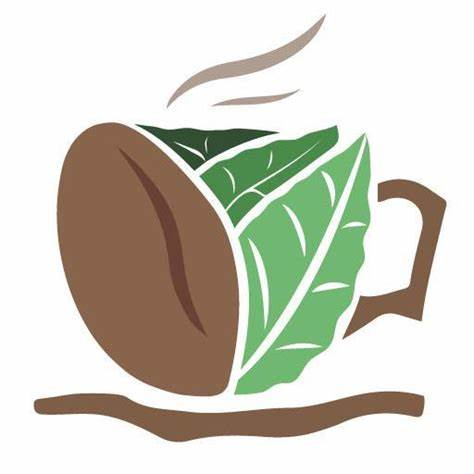
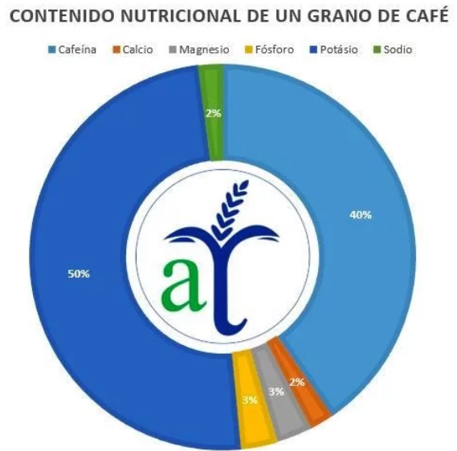
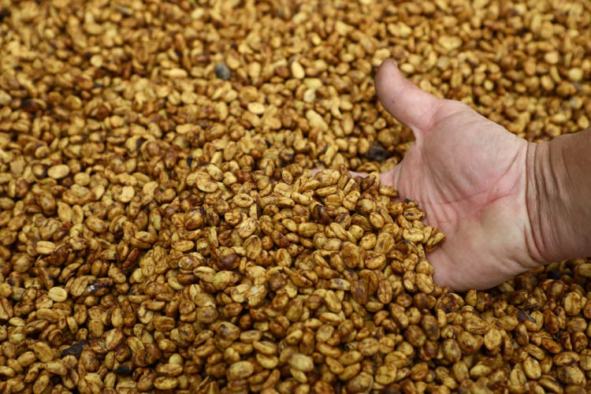
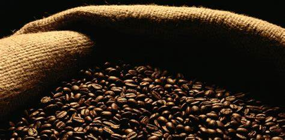
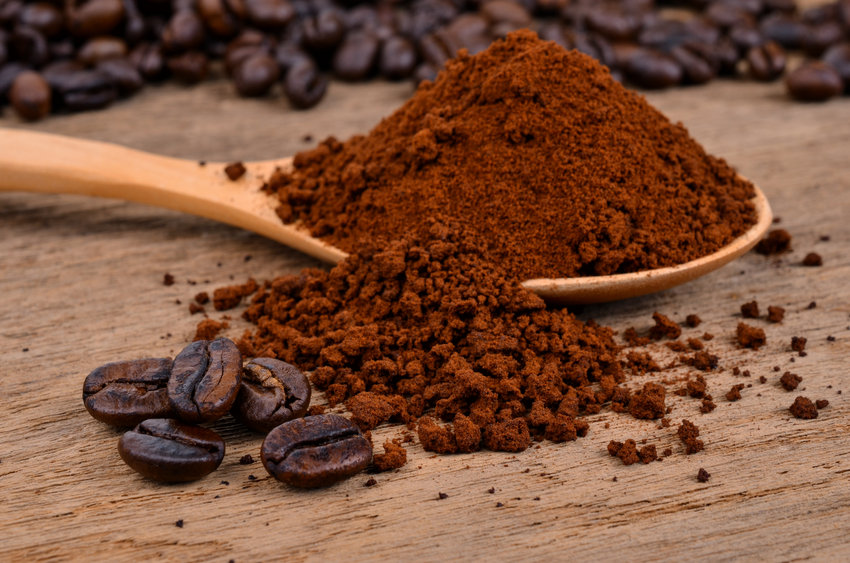
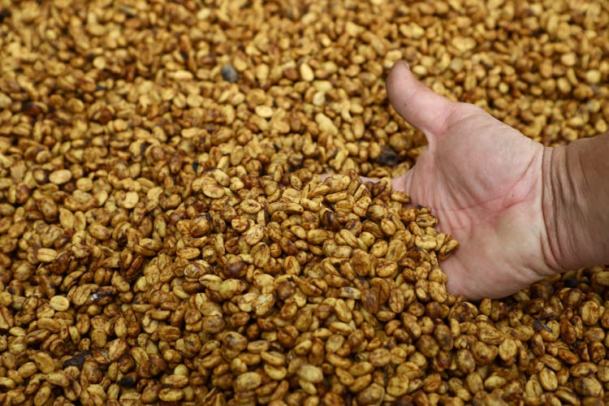
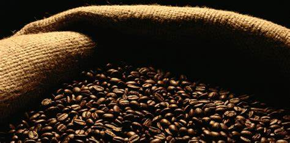
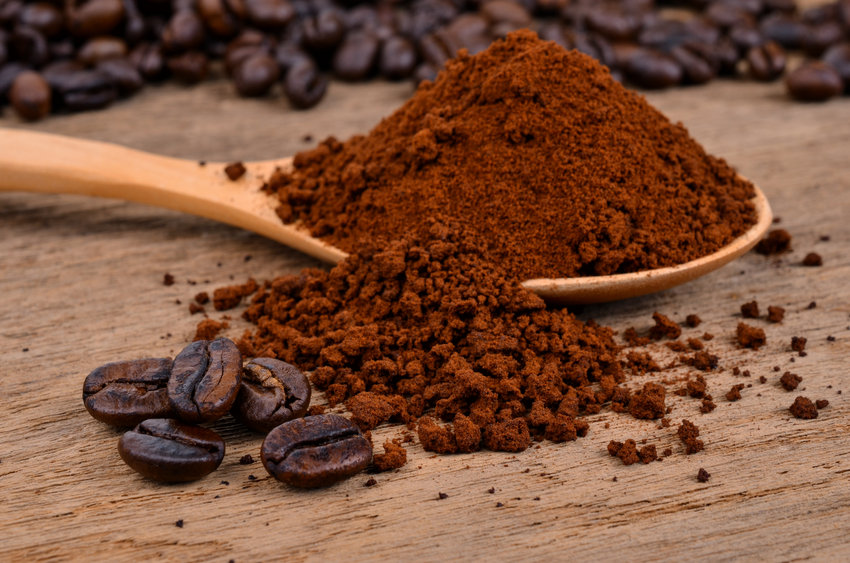

¿Qué es COFFE TEMPTATION?
COFFEE TEMPTATION es un sitio web para todos aquellos amantes de esta exquisita bebida donde explica acerca de como se lleva acabo el procedimiento del café en polvo, desde que se siembra una semilla, hasta que llega a ser una taza de café.

Sabemos que el café es una bebida altamente estimulante por su contenido de cafeína. Suele tomarse
durante el desayuno, después de éste o incluso como único desayuno, también se acostumbra
tomarlo después de las comidas o cenas para charlar o sólo por costumbre.
Es una de las bebidas sin alcohol más socializadoras en muchos países. Las formas más
populares de tomarlo son solo y con leche (con o sin azúcar); también se suele añadir crema o
nata, leche condensada, chocolate o algún licor ya dependiendo de la receta hay muchas
maneras de prepararlo. Se sirve habitualmente caliente, aunque en temporadas estivales
también se toma frío o con hielo.
Contenido nutricional
Su importancia nutricional la relaciona negativamente con la cafeína si se consume en exceso. Sin embargo, también se le asocian algunas propiedades beneficiosas; como la lucha contra las cefaleas, incluso contra la diabetes, las enfermedades cardiovasculares hasta el cáncer y la cirrosis.
Una tasa de infusión de café posee un 94,5 % de agua; además de una cantidad importante de potasio y otros elementos.

 x
x
 




